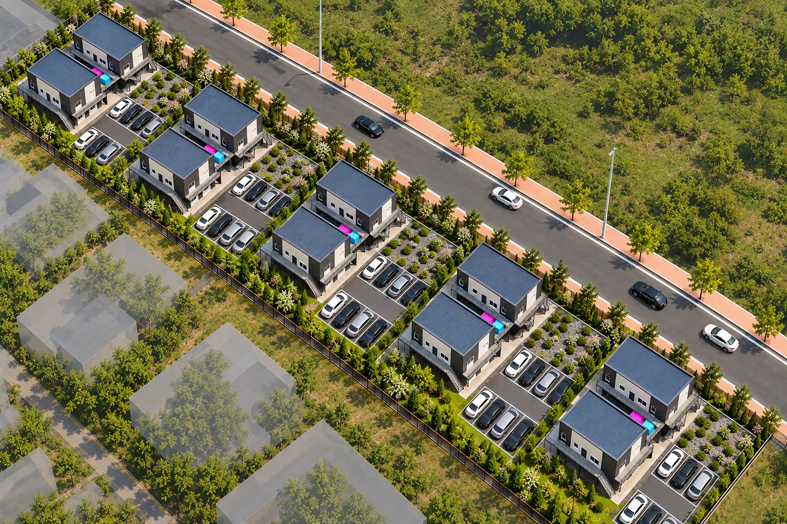
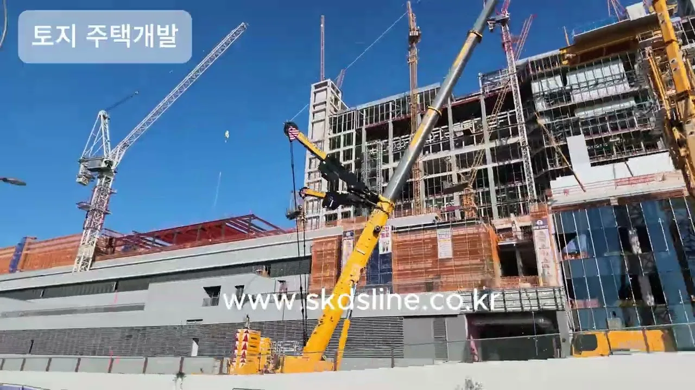

MAIN
1인 개발
토지 전체
A동11세대
B동11세대
토지 전체 + A동 + B동 · 총 22세대
한 명이 하나의 개발부지 전체를 개발합니다. 투자 기준금액은 자료 신청 후 가격안내서에서 안내합니다.

개발사업 안내
토지부터 건축·준공까지 하나의 상품으로 개발하고
완성 후 임대수익을 만드는 개발사업입니다.
* 예상 임대수익 및 수익률은 제시된 임대조건과 투자조건을 기준으로 산출한 시뮬레이션이며, 공실·관리비·세금·금융비용 등에 따라 실제 수익은 달라질 수 있습니다. (1개 부지 22세대 기준)
조감도는 이해를 돕기 위한 이미지이며 실제와 다를 수 있습니다. 본 사이트는 SK하이닉스와 무관하며 공식 제휴 관계가 아닙니다.
Overview
토지부터 준공까지.
토지만 드리는 상품이 아닙니다.
개발에 필요한 주요 과정을 하나의 상품으로 구성했습니다.
토지, 토목, 기초공사, 22세대 주택, 인테리어, 풀옵션, 건축인허가, 준공까지 하나의 개발상품에 담았습니다.
Field Video
경기도 용인 SK하이닉스 반도체 클러스터의 공사현장을 촬영한 영상입니다.

※ 현장 이해를 돕기 위한 참고 영상입니다.
01 · Industry
약 415만㎡
클러스터 규모
현재 진행상황
31조원
1기 팹 총 투자 약 31조원
첫 클린룸 2027년 2월 오픈 목표
Y1 → Y2 → 후속 팹
2026 하반기
Y1 골조 · 클린룸 · 설비
2027년 7월
Y2 착공 목표 · 투자 약 35.2조원
2028 ~ 2029
Y2 공사 · 2029년 6월 첫 클린룸 계획
이후 ~ 2033년
후속 팹 · 4개 팹 건설 계획
현재 약 1만 5천 명
내년 두 배 이상
02 · Media & Field Data
SK하이닉스 용인 반도체 클러스터와 주변 지역의 변화를 다룬 주요 언론·유튜브 콘텐츠를 모았습니다.
※ 본 콘텐츠는 시장에 대한 다양한 시각과 정보를 제공하기 위한 참고자료입니다.
※ 기사 이미지는 내용 이해를 돕기 위해 제작한 참고 이미지이며, 기사 원문 사진이 아닙니다.
산업의 변화는 생산시설 안에서만 끝나지 않습니다. 사람이 움직이고, 주거와 생활권이 함께 변화합니다.
03 · Market Map
SK하이닉스 용인 반도체 클러스터를 중심으로 용인 원삼면과 안성 삼죽면 일대를 살펴봅니다.
전체 권역
클러스터가 있는 용인 원삼면에서, 인접한 안성 삼죽면 덕산리까지 이어지는 흐름을 한 장으로 봅니다.
클러스터
SK하이닉스 반도체 클러스터가 들어서는 핵심 산업권역. 대규모 생산시설과 협력기업이 모이는 산업 중심지입니다.
용인 원삼면
SK하이닉스 반도체 클러스터가 들어서는 핵심 산업권역. 대규모 생산시설과 협력기업이 모이는 산업 중심지입니다.
안성 삼죽면
용인 원삼면과 이어지는 인접 배후권역. 산업시설과 주거·생활권의 관계를 함께 볼 지역입니다.
★ 안성 삼죽면 덕산리
클러스터에서 약 11km, 차량 약 15분. 산업과 생활권이 연결되는 배후 입지입니다.
SK하이닉스 용인 반도체 클러스터에서 덕산리까지
약 11km
차량 약 15분
산업과 생활권이 연결되는 배후 입지
지방도 325호선과 306호선 등 주요 도로망을 통해 용인 원삼면과 안성 지역을 잇는 이동권역입니다.
인근 산업단지 개발과 함께 산업, 고용, 주거 수요의 변화를 살펴볼 수 있는 지역입니다.
산업의 중심에서 가까운 곳만 보는 것이 아니라, 산업과 주거가 연결되는 배후지역을 함께 봐야 합니다.
04 · Market Data
05 · Demand
06 · Deoksan-ri
반도체 클러스터에서 원삼면, 삼죽면으로 이어지는 배후 지역. 그 흐름 안에서 덕산리에 주목했습니다.
토지 · 입지 사진
건축물 사진
07 · Precedent Model
동일한 개발모델이 먼저 만들어지고 있습니다.
먼저 만들고,
직접 운영합니다.
08 · Sites
1부지에서 먼저 만들어지고 있는 동일한 개발모델을 2~5부지에 적용합니다.
토지에서 끝나는 상품이 아닙니다.
하나의 개발상품으로 진행됩니다.
공급가격은 개발사업 자료 신청 후 안내드립니다.
09 · Product
단순 토지 매매가 아닙니다. 아래 과정이 하나의 상품에 포함됩니다.
계약부터 임대 운영까지
STEP 01
계약
STEP 02
인허가
STEP 03
착공
STEP 04
준공
STEP 05
임대 운영
일정은 인허가와 공정에 따라 달라질 수 있습니다.
상세 개발자료 신청 시 공급조건과 가격안내서를 제공합니다.
포함 범위와 제외 항목은 계약 시 별도 안내합니다.
10 · Participation
한 명이 전체를 개발하는 방법과, 두 명이 나누어 참여하는 방법 중에서 선택할 수 있습니다.
MAIN
토지 전체 + A동 + B동 · 총 22세대
한 명이 하나의 개발부지 전체를 개발합니다. 투자 기준금액은 자료 신청 후 가격안내서에서 안내합니다.
SUB
각자 토지 공유지분 약 1/2 + 해당 동
두 명이 하나의 개발부지를 나누어 개발합니다. 투자 기준금액은 자료 신청 후 가격안내서에서 안내합니다.
참여 방식별 조건과 투자 기준금액은 개발사업 자료 신청 후 안내드립니다.
11 · Revenue
반도체 배후 주거 수요 위에 지은 개발상품, 예상 수익률 14~20%의 근거를 개발자료에서 항목별로 공개합니다.
14~20%
예상 수익률 · 시뮬레이션 기준
확정 보장이 아닌 예상 수익률입니다.개발사업 자료 신청 시 항목별로 제공합니다.
※ 예상 수익률은 가정에 따른 시뮬레이션이며 임대시장, 공사비, 금리, 세제 등에 따라 달라질 수 있습니다.
12 · Notice
계약 전에 아래 사항을 충분히 확인해 주세요.
13 · FAQ
궁금한 점이 더 있으시면 전화나 상담 신청으로 편하게 문의해 주세요.
아래 신청 양식을 작성하시거나 전화(010-5784-2505)로 요청해 주시면 개발사업 자료를 안내해 드립니다.
공급가격은 사이트에 공개하지 않습니다. 개발사업 자료를 신청하시면 공급조건과 가격안내서로 안내해 드립니다.
상담 신청 시 방문을 희망하신다고 남겨 주시면 가능 여부와 일정을 안내해 드립니다.
1인 개발은 한 명이 토지 전체와 A동·B동(총 22세대)을 개발합니다. 2인 공동개발은 두 명이 각자 토지 공유지분 약 1/2과 해당 동을 맡아 하나의 개발부지를 함께 개발합니다.
대출 가능 여부와 조건은 금융기관의 심사와 개인별 상황에 따라 달라 저희가 안내드리기 어렵습니다. 직접 금융권에 상담하시기 바랍니다.
인허가와 공정에 따라 달라질 수 있습니다. 예상 일정은 개발사업 자료에서 안내해 드립니다.